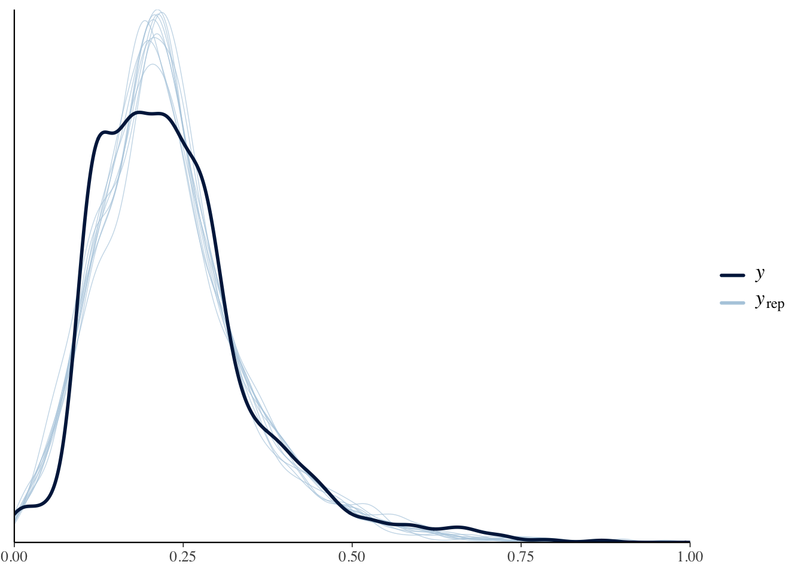
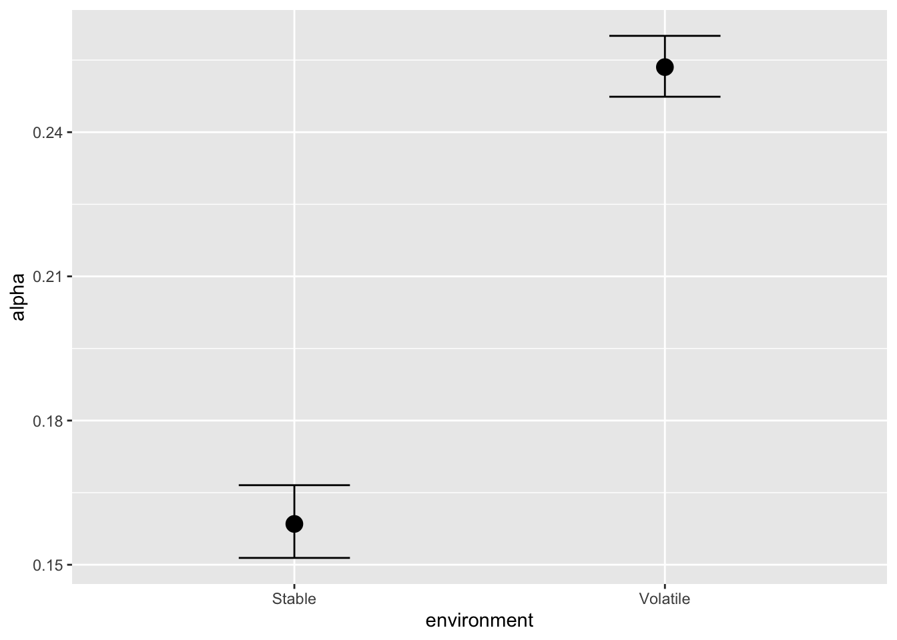
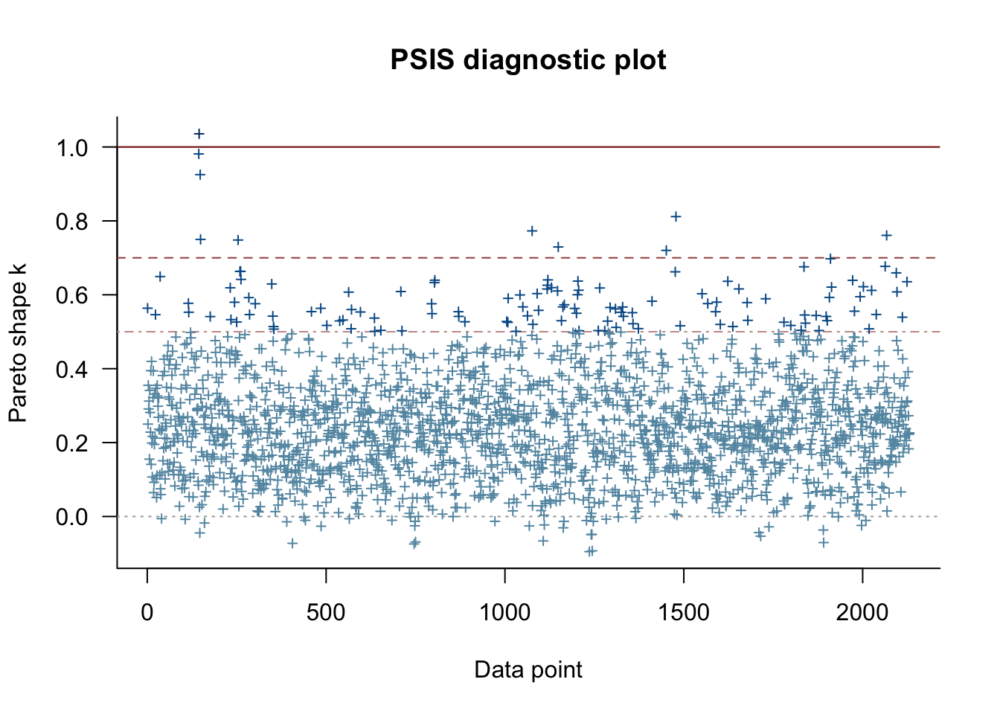

tar_load(brms_fitted_mod_alpha)Momentary Subjective Happiness
Autobiographical Probabilistic Reversal Learning Project
Autobiographical Probabilistic Reversal Learning (APRL) Task
Introduction
Jangraw et al. (2023) examined the prevailing assumption of a stable affective background throughout experimental procedures. It unveils a phenomenon termed ‘Mood Drift Over Time’, which encapsulates a systematic decrement in participants’ mood across time during simple tasks or rest periods. This discovery not only challenges the traditional methodological supposition of mood constancy during an experiment but also elucidates a relationship among mood drift, reward sensitivity, and life happiness.
Jangraw et al. (2023) suggest a nuanced interplay where the connection between mood drift and reward sensitivity is modulated by an individual’s overall life happiness. This modulation could act as either a buffer or amplifier in this relationship, highlighting the inherent complexity in mood dynamics across different individuals. Such insights could significantly impact the design of experiments in affective science, urging a consideration of broader life circumstances and attitudinal orientations of participants.
Jangraw et al. (2023) propose a hypothesis in tandem with theories of opportunity cost, positing that extended monotony may disrupt humans’ anticipations concerning the frequency of rewards and punishments, with the subsequent mood decline potentially serving as a gauge of perceived opportunity cost. This, in turn, could steer behavioral decisions between persisting with a task (exploitation) or transitioning to a new task (exploration).
Interestingly, a diminished negative mood drift was observed among depressed participants, a seeming paradox that is unraveled by differentiating between trait-based and state-based negative affects. This finding, resonating with the reduced reward valuation inherent in depression, suggests a moderated mood drift in depressed individuals, potentially due to a diminished discord with reward expectations. The moderation by depression risk opens a wider discourse on motivation and environmental engagement among depressed individuals, thereby enriching the comprehension of mood drift’s broader psychological and clinical ramifications. Through these findings, the study beckons a more nuanced exploration of mood dynamics, underscoring the necessity for methodological refinements in affective science research.
Method
Task Design
Emerging evidence shows many computational measures to have poor psychometric properties. This poses a risk of undermining the use of these measures for studying mental disorders. This is largely a consequence of over-relying on cross-sectional single-task study designs. To move forward, the field needs to embrace longitudinal designs with batteries of tasks (Karvelis et al., 2023).
We employed a novel task that we refer to as Autobiographical Probabilistic Reversal Learning (APRL). This task combines elements of traditional Probabilistic Reversal Learning (PRL) with an autobiographical reflective component, wherein participants reconsider their actions during the most salient event of their day.
Participants were prompted in the evening to reflect on the most salient event of their day. Following this reflective period, they engaged in a PRL task that consisted of 30 choice trials per session. In each trial, participants were asked to make one of two decisions: either “I would act as I did” or “I would choose the opposite course of action.”
After making their choice, participants received feedback in a manner consistent with standard PRL tasks. The learning environment was manipulated to be either “volatile” or “stable.” In the volatile environment, a reversal in reward probabilities occurred after the 15th trial. In contrast, the stable environment maintained constant reward probabilities throughout all 30 trials.
For both types of environments, the initial reward probabilities were set at 0.2 for choosing “the same action as actually happened” and 0.2 for opting for “the opposite course of action.” In the volatile environment, these probabilities switched after the 15th trial, whereas in the stable environment, they remained constant.
The procedure was repeated for 12 days.
Effect of Environment on Alpha
pp_check(brms_fitted_mod_alpha) + xlim(0, 1)Using 10 posterior draws for ppc type 'dens_overlay' by default.Warning: Removed 182 rows containing non-finite values (`stat_density()`).
bayes_R2(brms_fitted_mod_alpha) Estimate Est.Error Q2.5 Q97.5
R2 0.07237294 0.009744302 0.05511954 0.09237689summary(brms_fitted_mod_alpha) Family: asym_laplace
Links: mu = identity; sigma = identity; quantile = identity
Formula: alpha ~ environment + (environment | user_id/ema_number)
Data: params_happiness_clean_df (Number of observations: 2131)
Draws: 1 chains, each with iter = 1000; warmup = 0; thin = 1;
total post-warmup draws = 1000
Group-Level Effects:
~user_id (Number of levels: 215)
Estimate Est.Error l-95% CI u-95% CI Rhat
sd(Intercept) 0.00 0.00 0.00 0.01 1.00
sd(environmentVolatile) 0.01 0.00 0.00 0.01 1.00
cor(Intercept,environmentVolatile) -0.03 0.39 -0.74 0.70 1.00
Bulk_ESS Tail_ESS
sd(Intercept) 925 934
sd(environmentVolatile) 911 880
cor(Intercept,environmentVolatile) 938 914
~user_id:ema_number (Number of levels: 2131)
Estimate Est.Error l-95% CI u-95% CI Rhat
sd(Intercept) 0.00 0.00 0.00 0.01 1.00
sd(environmentVolatile) 0.00 0.00 0.00 0.01 1.00
cor(Intercept,environmentVolatile) 0.07 0.54 -0.86 0.91 1.00
Bulk_ESS Tail_ESS
sd(Intercept) 856 786
sd(environmentVolatile) 687 1029
cor(Intercept,environmentVolatile) 885 769
Population-Level Effects:
Estimate Est.Error l-95% CI u-95% CI Rhat Bulk_ESS Tail_ESS
Intercept 0.16 0.00 0.15 0.17 1.00 919 984
environmentVolatile 0.07 0.00 0.06 0.08 1.00 1069 869
Family Specific Parameters:
Estimate Est.Error l-95% CI u-95% CI Rhat Bulk_ESS Tail_ESS
sigma 0.03 0.00 0.03 0.03 1.00 952 760
quantile 0.36 0.01 0.35 0.37 1.00 1007 834
Draws were sampled using variational(meanfield). conditional_effects(brms_fitted_mod_alpha, "environment")
Interpretation
In a highly volatile environment, an agent might benefit from a higher α value, allowing it to rapidly update its expectations to adapt to the changing contingencies. A high α value places more weight on recent outcomes, making the agent more responsive to changes. The present data show that this is the case. This also indicates that participants completed the task in an appropriate manner.
Effect of APRL Task on Mood Change
The change in reported mood after the APRL task (mood_post - mood_pre) was analyzed with the following model. Mood_pre was centered within each participant.
mod_mood_1 <- brm(
mood_dif ~ mood_pre_cw * environment +
(mood_pre_cw * environment | user_id / ema_number),
family = student(),
data = params_happiness_clean_df,
control = list(adapt_delta = 0.99, max_treedepth = 20),
refresh = 0
)tar_load(brms_fitted_mod_mood_1)pp_check(brms_fitted_mod_mood_1) + xlim(-100, 100)Using 10 posterior draws for ppc type 'dens_overlay' by default.Warning: Removed 39 rows containing non-finite values (`stat_density()`).
bayes_R2(brms_fitted_mod_mood_1) Estimate Est.Error Q2.5 Q97.5
R2 0.8943159 0.007883346 0.8787709 0.9091754summary(brms_fitted_mod_mood_1)Warning: Parts of the model have not converged (some Rhats are > 1.05). Be
careful when analysing the results! We recommend running more iterations and/or
setting stronger priors.Warning: There were 8 divergent transitions after warmup. Increasing
adapt_delta above 0.8 may help. See
http://mc-stan.org/misc/warnings.html#divergent-transitions-after-warmup Family: student
Links: mu = identity; sigma = identity; nu = identity
Formula: mood_dif ~ mood_pre_cw + environment + (mood_pre_cw + environment | user_id/ema_number)
Data: params_happiness_clean_df (Number of observations: 2131)
Draws: 4 chains, each with iter = 2000; warmup = 1000; thin = 1;
total post-warmup draws = 4000
Group-Level Effects:
~user_id (Number of levels: 215)
Estimate Est.Error l-95% CI u-95% CI Rhat
sd(Intercept) 9.97 0.63 8.80 11.32 1.01
sd(mood_pre_cw) 0.26 0.02 0.23 0.30 1.00
sd(environmentVolatile) 2.33 1.15 0.15 4.27 1.03
cor(Intercept,mood_pre_cw) 0.15 0.09 -0.03 0.32 1.01
cor(Intercept,environmentVolatile) 0.08 0.29 -0.38 0.78 1.01
cor(mood_pre_cw,environmentVolatile) 0.15 0.28 -0.40 0.76 1.01
Bulk_ESS Tail_ESS
sd(Intercept) 653 1030
sd(mood_pre_cw) 1283 1950
sd(environmentVolatile) 91 311
cor(Intercept,mood_pre_cw) 775 1379
cor(Intercept,environmentVolatile) 428 544
cor(mood_pre_cw,environmentVolatile) 496 578
~user_id:ema_number (Number of levels: 2131)
Estimate Est.Error l-95% CI u-95% CI Rhat
sd(Intercept) 2.89 0.78 1.32 4.43 1.04
sd(mood_pre_cw) 0.30 0.02 0.27 0.33 1.01
sd(environmentVolatile) 2.20 0.89 0.40 3.94 1.04
cor(Intercept,mood_pre_cw) 0.85 0.08 0.66 0.98 1.12
cor(Intercept,environmentVolatile) -0.89 0.17 -0.99 -0.44 1.01
cor(mood_pre_cw,environmentVolatile) -0.70 0.21 -0.97 -0.21 1.04
Bulk_ESS Tail_ESS
sd(Intercept) 139 276
sd(mood_pre_cw) 256 593
sd(environmentVolatile) 130 298
cor(Intercept,mood_pre_cw) 30 175
cor(Intercept,environmentVolatile) 297 531
cor(mood_pre_cw,environmentVolatile) 160 482
Population-Level Effects:
Estimate Est.Error l-95% CI u-95% CI Rhat Bulk_ESS Tail_ESS
Intercept -0.16 0.76 -1.67 1.33 1.03 291 776
mood_pre_cw -0.75 0.02 -0.79 -0.71 1.00 1239 1775
environmentVolatile -1.45 0.44 -2.32 -0.61 1.00 1407 1816
Family Specific Parameters:
Estimate Est.Error l-95% CI u-95% CI Rhat Bulk_ESS Tail_ESS
sigma 2.93 0.28 2.42 3.51 1.01 213 556
nu 1.84 0.18 1.53 2.22 1.00 627 1396
Draws were sampled using sample(hmc). For each parameter, Bulk_ESS
and Tail_ESS are effective sample size measures, and Rhat is the potential
scale reduction factor on split chains (at convergence, Rhat = 1).conditional_effects(brms_fitted_mod_mood_1, "environment")conditional_effects(brms_fitted_mod_mood_1, "mood_pre_cw")loo_mood_1 <- loo(brms_fitted_mod_mood_1)Warning: Found 87 observations with a pareto_k > 0.7 in model
'brms_fitted_mod_mood_1'. It is recommended to set 'moment_match = TRUE' in
order to perform moment matching for problematic observations.plot(loo_mood_1)
print(loo_mood_1)
Computed from 4000 by 2131 log-likelihood matrix
Estimate SE
elpd_loo -7761.3 50.2
p_loo 1806.8 29.2
looic 15522.5 100.4
------
Monte Carlo SE of elpd_loo is NA.
Pareto k diagnostic values:
Count Pct. Min. n_eff
(-Inf, 0.5] (good) 1774 83.2% 43
(0.5, 0.7] (ok) 270 12.7% 28
(0.7, 1] (bad) 83 3.9% 21
(1, Inf) (very bad) 4 0.2% 14
See help('pareto-k-diagnostic') for details.Compute and display the 95% CI for each level of environment
emm_res <- emmeans(brms_fitted_mod_mood_1, specs = "environment")
confint(emm_res, level = 0.95) environment emmean lower.HPD upper.HPD
Stable -0.0152 -1.52 1.46436
Volatile -1.4660 -2.84 -0.00107
Point estimate displayed: median
HPD interval probability: 0.95 Perform hypothesis testing
hyp_test <- hypothesis(
brms_fitted_mod_mood_1,
hypothesis = "environmentVolatile < 0"
)
print(hyp_test)Hypothesis Tests for class b:
Hypothesis Estimate Est.Error CI.Lower CI.Upper Evid.Ratio
1 (environmentVolat... < 0 -1.45 0.44 -2.2 -0.75 1999
Post.Prob Star
1 1 *
---
'CI': 90%-CI for one-sided and 95%-CI for two-sided hypotheses.
'*': For one-sided hypotheses, the posterior probability exceeds 95%;
for two-sided hypotheses, the value tested against lies outside the 95%-CI.
Posterior probabilities of point hypotheses assume equal prior probabilities.References
Jangraw, D. C., Keren, H., Sun, H., Bedder, R. L., Rutledge, R. B., Pereira, F., Thomas, A. G., Pine, D. S., Zheng, C., Nielson, D. M., et al. (2023). A highly replicable decline in mood during rest and simple tasks. Nature Human Behaviour, 7(4), 596–610.
Karvelis, P., Paulus, M. P., & Diaconescu, A. O. (2023). Individual differences in computational psychiatry: A review of current challenges. Neuroscience & Biobehavioral Reviews, 105137.